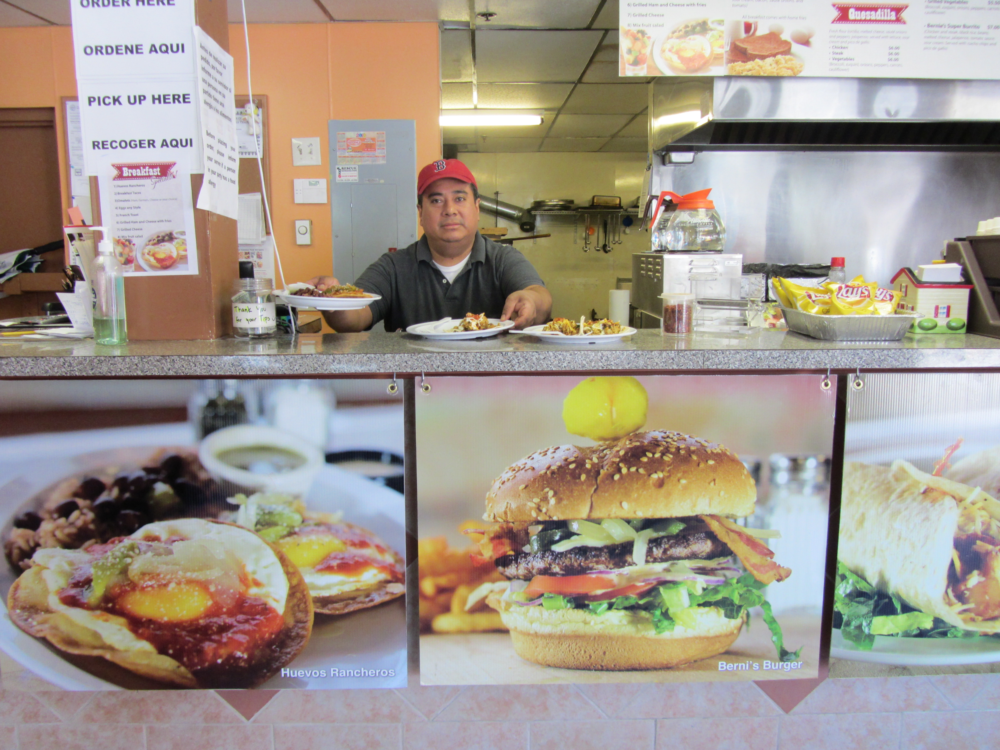

Emily Torres-Cullinane presenting major project concepts and obtaining audience feedback at the May 15, 2013 North Shore Latino Business Association General Meeting. | |
 Invitation to the DTL Cultural District Community Collective on April 25, 2013, as found on LynnHappens.com. |
|
 During a site visit on November 5, 2012, the project team had many impromptu conversations with people who work in Downtown Lynn. Jason Cruz, RAW's Clinical Supervisor, saw us walking around and invited us in for a tour of the gallery space at RAW. This initial meeting led to additional collaboration with RAW throughout the project. | |
| 
The project team stopped in at Bernie's Place numerous times for Bernie's delicious Huevos Rancheros as well as to learn about owner Bernie Quintanilla's views on owning a business in Downtown Lynn. Bernie's offers a variety of foods at affordable prices, in a clean, welcoming environment. The food photos in front of the counter and on the windows outside the restaurant were all taken by Bernie Quintanilla, featuring real menu items! | |
| Art outside RAW encapsulates a key idea to keep in mind: the future of Lynn is in its children! | |
Interviews, Presentations, & Events
Community Interviews, Presentations, and Events: In addition to Team of Advisors meetings and other project events organized by MAPC, the project team gave presentations about the project at events organized by other groups and interviewed several individuals and organizations on their perspectives regarding the future of Downtown Lynn.
Presentations at events organized by others:
- January 15, 2013: Presentation to the Lynn Area Chamber of Commerce Government Affairs Committee
- April 25, 2013: Presentation at the DTL Cultural District Community Collective
- May 15, 2013: Bilingual (Spanish and English) presentation at the North Shore Latino Business Association General Meeting
Interviews and small group meetings with the MAPC project team:
- September 12, 2012: Carly McClain, New Lynn Coalition Organizer
- January 28, 2013: Cathy Anderson, North Shore Community College Special Assistant to the President
- February 12, 2013: Phone conversation with Chris Bibby of Bibby Real Estate Corporation regarding real estate and development in Lynn, following the second Team of Advisors meeting
- February 21, 2013: Mark DeJoie, Heather Hildebrand, and Roxanne Nealon at Centerboard
- February 21, 2013: Seth Albaum, Founder and President of the Downtown Lynn Neighborhood Association and Editor of LynnHappens.com
- February 21, 2013: Martha Almy, consultant who developed the Downtown Lynn Cultural District branding initiative
- March 3, 2013: Martha Almy and Lynn Museum Executive Director Kate Luchini
- March 11, 2013: Phone meeting with Dr. Nancy Lee from Northeastern Dukakis Center to discuss the work she, Dr. Barry Bluestone, and their team have done in Lynn.
- March 20, 2013: Julie Menendez, Community Credit Union
- March 22, 2013: Corey Jackson, President, Managing Director, and Producing Arts Director, Arts After Hours and DowntownLynn.com blog founder
- March 26, 2013: Joy Winkler, Lynn resident and former North Shore Community Development Corporation Community Organizer
- March 28, 2013: Reverend Jane Gould, St. Stephen's Memorial Episcopal Church
- March 28, 2013: Frances Martinez, President/CEO of the North Shore Latino Business Association
- April 4, 2013: Executive Director Lori Abrams Berry, Marketing and Communications Manager Cynthia Steger-Wilson, and Community Relations Manager Debbie Smith Walsh at the Lynn Community Health Center
- May 17, 2013: Marc Draisen and Manisha Bewtra met with members of the New Lynn Coalition
Impromptu interviews and meetings:
- November 5, 2012: Met Phil Ouellette, The Daily Item General Manager and other Item staff
- November 5, 2012: Met Jason Cruz, RAW Art Works Clinical Supervisor and toured RAW gallery
- November 5, 2012: Met with Charlie and Dotty Christopoulos at Charlie's Junction Deli
- February 12, 2013: Met Bob Matthias, Building Curator at the Grand Army of the Republic Museum. Bob gave the project team a tour of the facility following the Team of Advisors meeting held there.
- February 23, 2013: Met Wig Zamore at an event in Somerville and learned more about environmental contamination concerns at the former Hawthorne's restaurant site
- March 15, 2013: Met Matt O'Neil, Blue Ox Chef/Owner while dining at the restaurant, which included a brief conversation about the project
- March 15, 2013: Met Carly McClain and Jeff Crosby at the New Lynn Coalition office
- April 4, 2013: Met staff at the Gordon College satellite office in Downtown Lynn
- April 4, 2013: Met staff of the Lynn Public Library and followed up with correspondence to the library director
- April 13, 2013: Met Bernie Quintanilla, owner of Bernie's Place, following the Downtown Lynn Data Walk
- May 15, 2013: Met Kimberley Luck at Girls, Inc. and toured facility
- May 15, 2013: Met Zimman's staff and manager
- May 15, 2013: Met Lupita's restaurant staff and manager
- May 15, 2013: Met Shaw's supermarket manager
- May 15, 2013: Met Bernie Quintanilla at Bernie's Place again
- May 15, 2013: Met Basilio Encarnación, owner of Rincon Macorisano
- May 17, 2013: Met Saif Yousif, Manager, and other staff at Baghdad Convenience Store
Community events the MAPC project team attended:
- January 30, 2013: RAW Art Works "They Look Like Me" reception, where Manisha Bewtra and Emily Torres-Cullinane met RAW staff Shelby Morrison and Masiel Encarnación as well as youth and young professionals interested in getting more involved in local events and civic participation.
- February 5, 2013: Lynn Area Chamber of Commerce Annual Meeting and Awards Dinner
- March 28, 2013: RAW Art Works Career Night
- May 5, 2013: Lynn Area Chamber of Commerce Government Affairs Committee Meeting
- November 13, 2013: Lynn Area Chamber of Commerce Government Affairs Committee Meeting
Meetings with municipal partners and local officials: In addition to Team of Advisors meetings, the project team had numerous meetings with our municipal partners and local officials to update them on our progress and to get their feedback regarding the direction of the project. This list represents most of the meetings MAPC had with the City of Lynn Department of Community Development (formerly called the Office of Economic and Community Development or OECD), Lynn Housing Authority and Neighborhood Development (LHAND), the Mayor's Office, the Inspectional Services Department, the Economic Development Industrial Corporation (EDIC), and Lynn City Councilors. Some additional communications such as email correspondence and phone conversations are not included.
- August 16, 2011: MAPC Senior Regional Planner and Project Manager, Manisha Bewtra, met with James Marsh and Don Walker from OECD and Jeff Weeden from LHAND to develop project scope of work and to tour Downtown Lynn
- October 3, 2011: Manisha Bewtra and MAPC Land Use Division Director Mark Racicot met with James Marsh, Don Walker, and Jeff Weeden at Lynn City Hall to further define scope of work
- February 7, 2012: Manisha Bewtra met with James Marsh, Don Walker, and Jeff Weeden to finalize the project scope.
- March 27, 2012: Prior to approval of the project scope by the Metro Boston Sustainable Communities Steering Committee, MAPC Executive Director Marc Draisen and Project Manager Manisha Bewtra met with Mayor Judith Flanagan Kennedy at Lynn City Hall.
- April 11, 2012: Scope of Work approved by the Metro Boston Sustainable Communities Steering Committee
- May 11, 2012: MAPC Economic Development Manager and Interim Project Manager Steven Winter met with Don Walker and James Marsh at Lynn City Hall
- August 30, 2012: Manisha Bewtra met with City of Lynn Director of Special Projects Donald Arthur at MAPC
- September 12, 2012: Manisha Bewtra met with Don Walker, Jeff Weeden, Don Arthur, and From Mills to Main Streets (another Metro Boston Sustainable Communities project) coordinators Marcia Hohn from the Immigrant Learning Center and Juan Carlos Ferrufino from Ferrufino Consulting & Associates.
- October 11, 2012: Manisha Bewtra and MAPC Senior Community Engagement Specialist Emily Torres-Cullinane met with Don Walker and Jeff Weeden at Lynn City Hall
- November 5, 2012: Manisha Bewtra, Emily Torres-Cullinane, and MAPC Research Analyst Clayton Martin visited Downtown and met with Don Walker and Jeff Weeden to plan Team of Advisors Kickoff meeting
- November 21, 2012: Team of Advisors Kickoff Meeting. Don Walker helped with outreach for this meeting and the City provided refreshments.
- January 23, 2013: Meeting with Mike Donovan, Don Walker, Jeff Weeden, Bill Bochnak
- February 12, 2013: Team of Advisors Meeting 2. Don Walker helped coordinate the meeting at the GAR museum and the City provided refreshments.
- February 22, 2013: Manisha Bewtra and Emily Torres-Cullinane met with Ward 5 Councilor (now Councilor-at-Large) Brendan Crighton, who also worked in the Office of Senator Thomas M. McGee.
- March 7, 2013: Manisha Bewtra and MAPC Senior Regional Planner Matthew Smith met with LHAND Director of Planning and Development Norm Cole, Neighborhood Development Manager Peggy Phelps, and Jeff Weeden at LHAND office.
- April 10, 2013: Team of Advisors Meeting 3. Don Walker helped coordinate the meeting at Lynn City Hall and the City provided refreshments.
- May 17, 2013: Manisha Bewtra met with Mayor Judith Flanagan Kennedy and Mayor's Chief of Staff Jamie Cerulli
- May 23, 2013: Manisha Bewtra spoke with Council President Tim Phelan on the phone
- May 23, 2013: Open House and Public Forum
- June 25, 2013: Manisha Bewtra and Marc Draisen met with Mayor Kennedy at Lynn City Hall
- August 22, 2013: Manisha Bewtra, Emily Torres-Cullinane, Matt Smith, and Mark Racicot met with Mayor Kennedy, Jamie Cerulli, James Marsh, Don Walker, Norm Cole, Peggy Phelps, Jeff Weeden, Jim Cowdell, Mike Donovan, and LHAND Executive Director and EDIC Chairman Charles Gaeta at City Hall to discuss preliminary recommendations, need for additional outreach, and plan for completion.
- September 3, 2013: Manisha Bewtra, Matt Smith, Mark Racicot, and Marc Draisen met with Lynn City Council President Tim Phelan at City Hall to share project details and discuss additional outreach to City Councilors.
- January 14, 2014: Final presentation of project at Lynn City Hall, coordinated with help from the Mayor's Office.